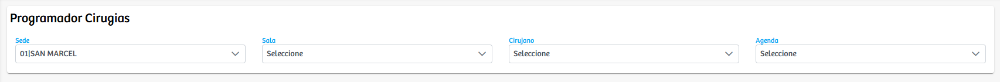

Modulos Sas-Web
Funcionalidades
Programador Cirugias
El módulo Programador Cirugias permite registrar la programación de procedimientos quirúrgicos a partir de la selección de varios datos clave. En la vista principal, el usuario debe elegir la sede, la sala, el cirujano y la agenda en la que se programará la cirugía. Estos campos funcionan como filtros y parámetros para definir las condiciones en las que se llevará a cabo el procedimiento. Una vez diligenciada esta información, el sistema puede continuar con el proceso de agendamiento o asignación según la lógica interna del módulo. Debido a su diseño simple y directo, este componente actúa como una herramienta rápida para iniciar el proceso de programación quirúrgica, garantizando que los datos básicos necesarios para organizar una cirugía queden correctamente registrados desde el inicio.
